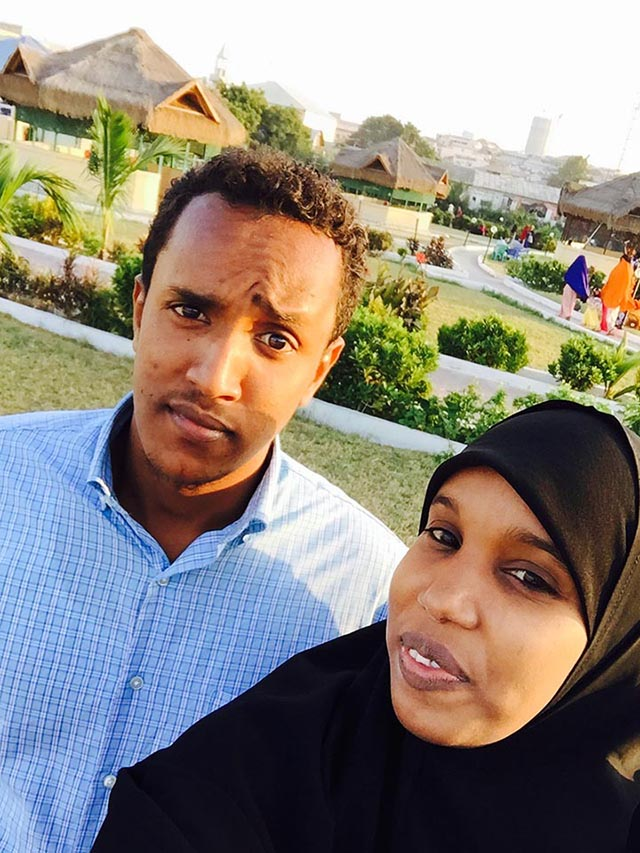

Voice of America
Community builder with a camera

Through social media, Zahra Qorane tries to improve perceptions of Mogadishu
By Abdulaziz H. Osman and Carol Guensburg
Zahra Qorane holds her Sony tablet at arm’s length, positioning the screen for a selfie from a Mogadishu hotel rooftop. The Somali capital sprawls below, with blocky white buildings, green dots of palms and skeletal communications towers stretching to the unseen shoreline of the Indian Ocean.
She smiles. Click. Click. Click.
“Everybody knows that Mogadishu is a city that has experienced chaos and anarchy during my entire life,” the 25-year-old told VOA. But she focuses on its overlooked “beautiful places” and people seeking normalcy after two decades of civil warfare and attacks by Islamist extremists.
Earbud wires trail to Qorane’s tablet from beneath her head scarf, a blue gauze that occasionally flutters in the breeze. The device serves as one of her lenses on Mogadishu — and her portal to the world beyond.
Qorane has roughly 20,000 followers on Instagram, more than 11,000 on Facebook and more than 7,000 on Twitter — in her country, in the Somali diaspora and beyond. She offers them a near-daily infusion of colorful, upbeat images: A boy doing a backflip at Jazeera Beach. Women selling produce at the city’s busy Bakaara market. A selfie with several girlfriends, all smiling. Another selfie with her “li'l brother” Abdullahi visiting the Peace Garden, a popular new park.
Zahra Qorane poses for a selfie with her younger brother, Abdullahi, at Peace Garden. Since opening in 2015, it has become a favorite gathering place for residents and tourists alike, despite several bombing attacks at nearby businesses.
Yet another photo, posted in September, shows Qorane receiving an award from the Somali Tourism Association.
neighborhood, spends much of her free time operating as a self-appointed goodwill ambassador for her city and country. The group Youth for Somalia (YFS) chose her as its 2015 “person of the year,” calling her a “role model for many young people in Somalia. She uses her camera as a tool” for positive social change.
Sharing a positive outlook
A 2012 graduate of Mogadishu University, Qorane majored in social studies. She began her campaign of positivity not long after going online in 2010. “The objective was not to meet people or to make friends but to send out messages,” she says.
Nonetheless, she met people and made friends, and even helped entice some to visit her beloved land. “They said they saw me … and the pretty images of Mogadishu that I posted on social media, and after that they decided to at least go to that beautiful place.”
“All they see about Mogadishu is the problems. Now it’s up to us to change that perception.”
Visitors have come from Britain, Canada, the United Arab Emirates and United States, among other countries. “We meet at a local cafe and have a chat about Mogadishu,” Qoroane says. “Most of them promise that they will return, and some of them are still in Mogadishu.”
The young woman, who acknowledges she looks online for local security alerts before leaving home, remains determined to find the good in Mogadishu and to share it.
“All they see about Mogadishu is the problems,” she says of most outsiders. “Now it’s up to us to change that perception.”
VOA Somali service’s Abdulaziz H. Osman reported from Mogadishu, with Carol Guensburg reporting from Washington, D.C.
In the midst of war-torn Mogadishu, young Somali men and women have taken to their mobile phones to engage and connect with one another on social media.


About the project
This project explores internet freedom and how its availability, or restrictions, affect individuals. It’s a joint initiative by Radio Free Europe/Radio Liberty, Middle East Broadcasting Networks, Voice of America, Radio Free Asia and the Office of Cuba Broadcasting. They’re overseen by the Broadcasting Board of Governors.
About VOA
Voice of America provides trusted and objective news and information in 45 languages to a measured weekly audience of more than 236.6 million people around the world. For nearly 75 years, VOA journalists have told American stories and supplied content that many people cannot get locally: objective news and information about the US, their region and the world.